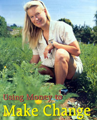
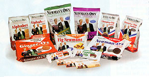
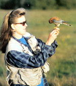

Imagine a typical New England family Thanksgiving dinner-mouth-watering roasted turkey with traditional bread stuffing (Father's favorite), buttered baby peas, mashed potatoes with gravy, sweet potatoes, tossed salad and fresh pumpkin pie, all served in a homey 200-year-old colonial in Westport, Connecticut.
But this dinner is anything but typical. The food did not come from the supermarket or an upscale gourmet grocer. The meal's ingredients arrived secretly, in two bulging tote bags muscled aboard an airliner in California. This meal is a culinary trap set by a cunning daughter.
Enter the unsuspecting victim, one Paul Newman, actor. His life is about to take an unexpected turn.
"He is very traditional," says the designated holiday cook, Elinore "Nell" Newman, eldest of three daughters of Paul Newman and actress Joanne Woodward. "So, when he finished wiping his plate clean, I asked, 'How did you like your organic Thanksgiving dinner, Pa?' He stopped for a minute, then smiled as he realized he'd been had. 'I see what you mean,' he said. 'I understand now."'
What "Pa" Newman suddenly understood was just how good fresh, organic food can be. Like a lot of Americans, Newman had the idea organic food was nut loaf and yeast gravy from the hippie-dippie 1960s. Nell kept telling him organic wasn't that way anymore. And every time Pa asked her to join his food business, Newman's Own, she came back with the idea of starting her own organic line under the Newman name. They had been arguing about it for years.
"That is why I did the dinner," Nell Newman says of the 1992 organic Thanksgiving, "because whenever I mentioned to him the idea of doing something with organic foods, he turned up his nose. My sole purpose was to educate him about organic, to show him that it didn't have to be heavy, but could be light, good and fresh."
And so Paul Newman gave in. He agreed to cover one year's expenses while Nell and her business partner, Peter Meehan, researched the feasibility of a certified-organic line under the Newman name. Paul had just one condition, as Meehan recalls: "He said, 'Spend what you need to spend, but you have to pay me back, because it is charity money that I would have given away."'
In 1982, Paul Newman and a long-time friend, author A.E. Hotchner, began selling their salad dressings (previously famous among friends and family as holiday gifts) under the Newman's Own brand. At the onset, Newman made a decision that created a unique business model: He decided all his after-tax profits would go to the common good. Sales took off-the line quickly grew to include steak sauce, pasta sauce, popcorn, salsa and lemonade. The 22-year success of Newman's Own has generated more than $150 million for charities that benefit children, the arts, the environment, and disaster and hunger relief.
Nell's new enterprise-Newman's Own Organics: The Second Generation-officially opened for business in 1993. The slogan touted "Great-tasting products that just happen to be organic." It, too, was an immediate success. The choice for the first product was a no-brainer; market research revealed that pretzel sales were booming nationwide, yet no organic varieties were on the market, and Paul Newman loves pretzels. Nell's pretzels soon became the best-selling brand in the natural foods industry. And her father's seed money was paid back quickly.
But Nell didn't stop there. To date, Newman's Own Organics has generated $2 million that Paul Newman has donated to organic agriculture research, wildlife preservation, education, medical research, affordable housing and other charitable causes. And Nell has taken her father's business model to a new level by taking recommendations from employees and suppliers to help choose which charities receive the money.
Nell Newman describes herself as a "flexitarian" when it comes to food and notes her favorite venue is farmer's markets. She eats a lot of fruits and vegetables, but also red meat, poultry and fish from time to time. At 44, she is tall and athletic, as befits someone who loves the outdoors. And her twinkling blue eyes tell you in an instant she is her father's daughter.
She lives in Santa Cruz, California, on the north coast of the Monterey Bay. Home is a 1,000-square-foot cottage built in 1947. The small yard is filled with organic vegetable gardens, flower beds and a prized white Babcock peach tree, which is netted each summer to protect the fruit she gives as gifts. Six laying hens follow her everywhere-two each of the Buff Orpington, Silver-laced Wyandotte and White Leghorn breeds. Nell calls them by name: Winston, Wycliff, Dorothy, Betty Poop, Einstein and Mrs. Robinson.
It was through birds-a love of avian creatures and the threat to them (and us) from agricultural pesticides-that Nell Newman's environmental consciousness emerged. When she was just 8 years old, she received a baby falcon as a gift. Her father had become acquainted with Morley Nelson, a falconer involved in making a movie adaptation of My Side of the Mountain, the award-winning children's book by Jean Craighead George.
"It's the story of a young boy who runs away, lives in a treehouse and uses a falcon to hunt," Nell says. "Dad brought Morley home one day and, before I knew it, I was reading a 12th-century treatise on falconry." In no time, she became an accomplished falconer.
Peregrine falcons were her favorite, and they were on the brink of extinction: The pesticide DDT made their eggs so fragile they would break during incubation. Nell tried to help them the only way a little girl could. "We had five or six apple trees-if the sprayer guy showed up when Mom and Dad weren't home, I sent him away," she says. "I got him to stop spraying the apple trees."
At 16, she'd had enough of just about everything and everybody. She dropped out of high school and distanced herself from her family for a few years. Later, she earned her GED and enrolled in the College of the Atlantic in Bar Harbor, Maine, from which she graduated in 1987 with a degree in human ecology. She then went to work for the Environmental Defense Fund in New York City. "I lasted three months, until it got really hot," she recalls. "I had serious culture shock going from Maine to New York."
California beckoned. Nell wound up at the Ventana Wilderness Sanctuary in Big Sur, working to re-establish the bald eagle in central California. A few years later, she switched to the Santa Cruz Predatory Bird Research Group. Workers there routinely had their blood analyzed after handling pesticide-laced bird eggs. Even though she didn't work with the eggs, Nell had her blood tested, too, out of curiosity, and learned that her body contained PCBs, DDT and chlordane, a banned termite insecticide. She was stunned.
Then came an even worse blow. After successes in re-establishing the peregrine falcon, U.S. government officials revised the peregrine's status from endangered to threatened, a less-critical category. "When that happened, our funding dried up because the bird wasn't sexy anymore," Nell says. "But that was the most critical time, because we needed the money for monitoring. That was infuriating. Then I had this bare-brained idea, just a knee-jerk reaction. I said, 'Damn it, I am sick of trying to raise money. I am going to do what Pa did-start a food company, but use organic ingredients, and donate the profits to charity!"'
About that same time, Meehan, who had helped Nell find summer gardening jobs during her teenage years in Connecticut, sold his business there and moved to Santa Cruz. Call it serendipity, call it fate - Newman and Meehan met up again and it turned out they lived only five minutes from each other. This was a few years before Nell's organic Thanksgiving dinner.
"Nell and her dad corresponded about the food business," Meehan says. "I helped her write a letter that put her ideas in business format and he was really impressed. 'Oh wow,' he said, 'We could do Newman's Own, The Second Generation."' But he still wasn't sold on selling organic products. Nell was forlorn.
The entrepreneurial Meehan quickly countered: "I told her, 'I'm not going to commiserate with you. This is an incredible offer. If you turn it down without even trying, you'd be nuts!"' That's when Nell hatched the secret turkey-dinner plan to convince her father that "The Second Generation" should be organic.
"Nell is a true believer," says Gene Kahn, who 32 years ago founded Cascadian Farm, one of the first organic food companies in the United States. "She is motivated by her beliefs and combines that motivation with strong business sense. I just love her company. It is all done to benefit charity, so it is an excellent utilization of a celebrity persona-probably the best example we will ever see in the world of organics."
Organic Giving
Newman's Own Organics has 61 products on the market, ranging from pet food (introduced in 2003) to olive oil, pretzels and cookies. Thirty-five of those are 100 percent organic, while the rest have at least 70 percent organic ingredients. Organic or not, most of the products fall into the snack food category. "One of the biggest problems in doing what we do is that we are, in fact, a walking, functioning contradiction," Meehan says. "The world does not need another consumer product, nationally distributed with all of the problems of shelf-life, packaging and freight issues. So many things are inefficient and not sustainable in our operation by their very nature. It is difficult for me and Nell because we know that.
"But the fact that we are growing the organic base in agriculture makes it worthwhile. That, plus we can channel our profits into organizations that are in need of funding. If it weren't for Newman, I wouldn't be in the food business-it is so fraught with waste."
With all that in mind, the two came up with an idea to out-Newman Pa Newman. They decided: Let the people who produce Newman's Own foods help choose where the money goes.
Paul Newman flipped over the idea. "He thought that was incredible," Meehan says. "Paul had been in business for 15 years and he had never thought of it. Now everybody gets to give away the money."
That includes Judy Groft, who boxes bags of Newman's Own Organics pretzels and loads them into trucks at a plant in Hanover, Pennsylvania, "the buckle on the Pretzel Belt," according to Paul Newman. Giving away other people's money is a "great feeling," says Groft, a Hanover native. She and her fellow workers support causes ranging from Alzheimer's research to the local Ronald McDonald House with Newman money.
Another recipient of Newman's organic charity is the Grey Bears of Santa Cruz, a non-profit group that shares fresh produce with senior citizens. The Grey Bean distribute 1.5 million pounds of produce a year, delivering food weekly to 1,300 members and 800 shut-ins. The group also teaches composting, makes and sells worm compost, and recycles newspaper and cardboard-keeping 11,000 tons of recyclable material out of landfills every year. For two years in a row, Newman's Own Organics and its employees have donated more than $23,000 to the group. "It was like having Santa Claus come to the facility," says Lynda Francis, Grey Bears executive director.
Nell Newman says her father has great respect for the power of the ballot and has threatened, on occasion, to disown any family member who doesn't vote. So she votes regularly, but, she says, "Voting with our dollars has more influence. The main reason for the growth of organics double-digit growth for the last 15 to 20 years-is that it is a way to make change, really, to show your support of a particular company and their methodology for growing your food."
|
 FRANK GAGLIONE Nell Newman started Newman's Own Organics, which makes a variety of snack foods and pet foods, in 1993. To date, the company has donated millions of dollars to charities and helped organic food become mainstream. |
 MATTHEW T. STALLBAUMER The next time you crave pretzels, cookies or a candy bar, look for these Newman's Own Organics products. Your purchase will promote organic farming and other worthwhile causes. |
 Brian Latta/Predatory Bird Research Group Nell Newman holds an American kestrel while working for a non-profit predatory bird conservation group. At that time, she learned her blood contained pesticides; from that discovery came her idea for an organic food company that benefits charitable organizations. |